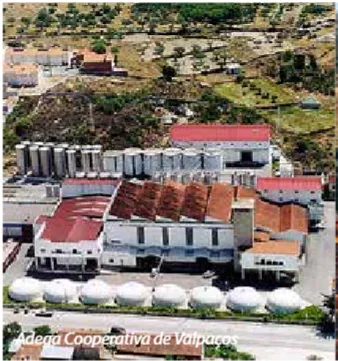
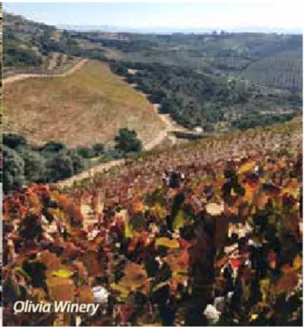

Kapitel 4 · Die portugiesischen Weinregionen
Weinregion Trás-os-Montes
Kennzahlen (2022)
Rebfläche: 9.701 ha (IVV); 11.010 ha (CVRTM)
Gesamterzeugung: 68.600.000 Liter (?)
Durchschnittsertrag: 7.070 Liter/ha (?)
Zertifizierte Weintypen: 83 %
Geschichte
Das (neolithische) Vorkommen von Vitis silvestris und seine mögliche Nutzung durch den Menschen sind noch nicht ausreichend erforscht; Rebanbau und Weinerzeugung in Trás-os-Montes während der römischen Besatzung sind jedoch belegt. Wegen der geringen Bevölkerungsdichte diente der Weinbau hier vor allem dem Eigenbedarf der Erzeuger und bestenfalls der regionalen Versorgung. Mit besseren Handelswegen, Tourismus und wissenschaftlichen Studien wurde zunehmend anerkannt, dass sich die Weine von Trás-os-Montes je nach Terroir deutlich voneinander unterscheiden; einige sind von ausgezeichneter, manche von außergewöhnlicher Qualität. Forschung und Berufsausbildung bietet die Universidade de Trás-os-Montes e Alto Douro. Eine eigene Weinregion entstand 1989 mit der Comissão Vitivinícola Regional de Trás-os-Montes (Regionale Weinbaukommission von Trás-os-Montes, CVRTM), die für die Ursprungsbezeichnung DO Trás-os-Montes und die geografische Angabe IG Transmontano zuständig ist. Seit 2010 ist sie die amtlich anerkannte Zertifizierungsstelle. Die Region gliedert sich in drei Unterregionen – Chaves, Valpaços und Planalto Mirandês – mit zusammen 11.000 ha Weinbergen.

Terroir
Klima nach Köppen-Geiger:
Csb, in einigen angrenzenden Gebieten Csa. Das Klima hat Savannenmerkmale. Durch einen Gebirgszug vom atlantischen Klimaeinfluss im Westen getrennt, steht die Region unter kontinentalem Einfluss. Es ist in allen Monaten warm, mit einer Regen- und einer Trockenzeit. Die mittlere Jahrestemperatur für Trás-os-Montes beträgt 27 °C. Jährlich fallen 1.120 mm Niederschlag. An 86 Tagen im Jahr regnet es nicht; die mittlere Luftfeuchtigkeit liegt bei 80 Prozent, der UV-Index bei 7. Indizes des MCC-Systems (Tonietto & Carbonneau, 2004): heliothermischer Index (HI): −1, Kühle-Nacht-Index (CI): +2, Trockenheitsindex (DI): +1. Frost zu Frühlingsbeginn und Gefahr vereinzelter Hagelschläge. Nur die auf einer Hochebene gelegene Unterregion Valpaços ist reich an Wasser. Der Douro beeinflusst den Weinbau in der Unterregion Planalto Mirandês.
Höhe der Weinberge: meist zwischen 350 und 800 Metern.
Bodenkunde: Der Name Trás-os-Montes (wörtlich „hinter den Bergen“) bezieht sich auf die geografische Lage dieser weiten Region: Sie liegt jenseits der Gebirgszüge Marão und Alvão, nördlich des Douro, östlich des Minho, und reicht bis zur spanischen Grenze im Norden. Die Böden unterscheiden sich von Unterregion zu Unterregion stark; jede der drei hat ihre eigenen Merkmale. Sie beginnen im Westen, wo Chaves überwiegend alkalische Granitböden aufweist, gemischt mit metamorphem Schiefer und Granit-Schiefer-Komplexen, in manchen Bereichen mit hoher natürlicher Radioaktivität. Morphologisch ist Granit ein verblüffendes Gestein, zugleich hart und mürbe, grob- und feinkörnig. Neben präkambrischem und archaischem Schiefer gibt es ein kleines Gebiet mit kalkhaltigen Gneisen und Schwemmlandflächen. Die Böden der Ebene von Chaves sind sehr fruchtbar und in Klasse 1 eingestuft. Hier stehen die Weinberge an den Hängen kleiner Täler, durch die die Nebenflüsse des Tâmega fließen. Traditionelle Weinberge liegen vor allem in Steillagen und sind in hangparallelen Terrassen angelegt. Die Arbeit verrichtet der Bauer mit Hilfe von Zugtieren, meist Eseln. Die Hochebene von Mirandela ist ein weites Gebiet mit kalten Zonen und, im Süden nahe den Steilhängen des Douro, solchen mit heißeren Sommern. Valpaços hat sanfte Hänge, die für die Weinqualität hervorragend sind, mit nicht feuchten, steinigen Granitböden und braunen oder roten mediterranen Böden aus Schiefer und Gneis.
Erzeugte Weintypen
IG-Wein Transmontano bzw. Landwein Transmontano:
Rot, Weiß und Rosé.
DO Trás-os-Montes: Rot, Weiß, Rosé, Schaumwein.
DO-Schaumweine (VEQPRD)
DO-Likörweine (VLQPRD)
Aguardente de Vinho (Weinbrand)
Aguardente Bagaceira (Tresterbrand)
Regionale Kontakte
Technische Informationen: Comissão Vitivinícola Regional de Trás-os-Montes (Regionale Weinbaukommission von Trás-os-Montes), Bairro do Bonito – Edifício IVV, 5430-429 Valpaços, Tel.: 278 729 678,
Website: www.cvrtm.pt, E-Mail: cvrtm@sapo.pt
Weintourismus:
Portweinroute, Largo da Estação, 5050-237 Peso da Régua, Tel. 254 324 774, reservas@rvp.pt. Turismo Trás-os-Montes, Rua 25 de Abril, Edf. Alexandre D’Arcos, 5210-178 Miranda do Douro, Bragança; geral@webdouro.com; Tel. +351 302 099 933.
Kulturelle Informationen zum Wein der Region: Confraria Enófila e Gastronómica de Trás-os-Montes e Alto Douro (Bruderschaft der Wein- und Feinschmecker von Trás-os-Montes und Alto Douro), Rua Conselheiro Abílio Beça 150, 5370-324 Mirandela.
Hochschulen und Weinbauforschung: Universidade de Trás-os-Montes e Alto Douro (UTAD), Quinta dos Prados, 5000-262 Vila Real, Tel. 259 350 000, www.utad.pt; Escola Superior Agrária de Bragança (Polytechnisches Institut Bragança – Landwirtschaftsschule), Campus de Santa Apolónia – Apartado 1172, 5301-855 Bragança; Tel.: (+351) 273 303 200, http://esa.ipb.pt.
Zertifizierungsstelle: Comissão Vitivinícola Regional de Trás-os-Montes – CVRTM, Bairro do Bonito – Edifício IVV, 5430-429 Valpaços, Tel.: 278 729 678, Fax: 278 729 678
Website: www.cvrtm.pt, E-Mail: cvrtm@sapo.pt
Informationen zu Erzeugern und Abfüllern:
http://www.ivv.min-agricultura.pt/np4/1736.html, Jahrbuch S. 118.
Botanik (Biodiversität) und zugelassene Sorten
Rechtsgrundlage: Ministerialerlass Nr. 1203/2006 vom 9. November und Gesetzesdekret Nr. 212/2004 vom 23. August.
Rotweine: Alicante Bouschet, Alvarelhão, Aragonez (Tinta Roriz), Aramon, Bastardo, Cabernet Franc, Cabernet Sauvignon, Camarate, Carignan, Castelão, Cornifesto, Donzelinho Tinto, Gamay, Gorda, Grand Noir, Jaen, Malvasia Preta, Marufo, Merlot, Moscatel Galego Roxo, Mourisco de Semente, Mourisco de Trevões, Pinot Noir, Rufete, Sousão, Syrah, Tinta Barroca, Tinta Carvalha, Tinta Francisca, Tinto Cão, Touriga Franca, Touriga Nacional, Trincadeira (Tinta Amarela), Vinhão, Donzelinho Roxo, Gewürztraminer und Moscatel Galego Roxo (Moscatel Roxo).

Weißweine: Arinto (Pedernã), Azal, Branda, Carrega Branco, Cercial, Chardonnay, Chasselas, Códega do Larinho, Dona Branca, Donzelinho Branco, Dorinto, Fernão Pires (Maria Gomes), Folgasão, Godelho, Gouveio, Malvasia Fina, Malvasia Parda, Malvasia Rei, Moscadet, Moscatel Galego Branco, Mourisco Branco, Pinheira Branca, Pinot Blanc, Rabigato, Riesling, São Mamede, Sauvignon, Semillon (Esgana Cão), Síria (Roupeiro), Tamarez, Verdelho, Viosinho und Vital.
Renommierte Weingüter
in der Region: Die Adega Cooperativa de Valpaços
hat derzeit rund 2.000 Mitglieder, deren gemeinsame mittlere Jahreserzeugung von 7.500.000 Kilogramm Trauben zu Valpaços-Wein verarbeitet wird. Die Adega Cooperativa do Rabaçal, C.R.L. hat 400 Mitglieder aus den Gemeinden Vinhais, Valpaços, Mirandela und Macedo de Cavaleiros, von denen sie jährlich 1,5 Millionen Kilogramm Trauben erhält. Die Cooperativa Riba Douro hat derzeit über 2.300 Mitglieder; die mittlere Jahreserzeugung lag in den letzten Jahren bei 3 Millionen Litern Wein.
Olivia Winery erzeugt Wein aus 65 Hektar Weinbergen.
